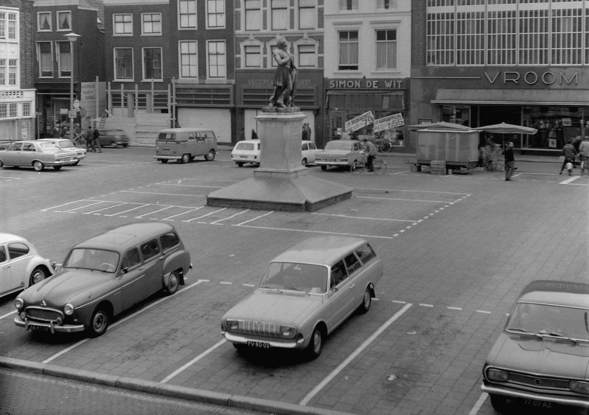

Ik wil het vandaag hebben over de grote kerk te Dordrecht.Ik vind altijd een leuk onderwerp om mee te beginnen ben geboren in Dordrecht.
De Grote of Onze- Lieve- Vrouwe Kerk van Dordrecht is al eeuwenlang onderdeel van de binnenstad van Dordrecht. Een waarschijnlijk rond 1100 gebouwde kapel vormde het begin. Deze kapel werd afgebroken en vervangen door een groter gebouw, dat in de loop der tijd uitgroeide tot het volwaardige kerkgebouw van nu. Met haar imposante uiterlijk is de Grote Kerk bepalend voor het silhouet van Dordrecht.
De Grote Kerk is Rijksmonument en staat in de Top 100 van de Rijksdienst voor Monumentenzorg (tegenwoordig Rijksdienst voor Cultureel Erfgoed) uit 1990.
De kerk heeft een rijke bouwgeschiedenis met complexe restauraties. De toren is eigendom van de gemeente Dordrecht. Het schip van de sinds 1572 protestantse kerk is eigendom van de kerkelijke Hervormde Gemeente Dordrecht, de fusiegemeente waarvan de Grote Kerk Gemeente deel uitmaakt. Er zijn drie orgels in de Grote Kerk met een eigen historie.
Het is mogelijk om de Grote Kerk te bezoeken of deel te nemen aan een rondleiding. U kunt hierbij ook gebruik maken van de Mediatour, die u meeneemt langs de geschiedenis en bezienswaardigheden van de kerk. Meer informatie treft u bij bezoekersinformatie.Uitsluitsel over de ouderdom van de Grote Kerk is niet te geven, maar archiefgegevens laten toe te concluderen dat de kapel, genoemd in een oorkonde die in 1122 vervaardigd is, de Grote Kerk kan zijn geweest. In 1986 werd bij opgravingen onder het koor van de huidige Grote Kerk muurwerk van tufsteen aangetroffen, dat kon worden gedateerd in de dertiende eeuw. Het gaat om een romaans koor met een opmerkelijk ruime halfronde absis. De binnenmaat daarvan bedraagt liefst negen meter. Helaas kon alleen een deel van het koor onderzocht worden, dus blijft voorlopig in het ongewisse of de twaalfde-eeuwse Romaanse kerk nog een voorloper heeft gehad. Wel is duidelijk dat Dordrecht in die tijd al een kerk van allure had.
Opgraving
Uitbreidingen
Het groeiende Dordrecht bleef zijn Grote Kerk koesteren. Uit bewaard gebleven stadsrekeningen blijkt dat in de jaren 1284 en 1285 aan de noordzijde het Onze-Lieve-Vrouwe- of Mariakoor werd gebouwd. In de rekening zijn ook uitgaven voor de bouw van een toren opgenomen. Het lijkt niet waarschijnlijk dat deze op de plaats van de huidige toren, die uit de vijftiende eeuw stamt, is neergezet. Ook de kerk onderging een verbouwing die blijkbaar van zo grote betekenis was, dat de Utrechtse bisschop de kerk kwam wijden.
In 1367 werd de kerk van parochiekerk verheven tot kapittelkerk en ook dat gaf weer aanleiding tot bouwkundige activiteiten. Maar gegevens daarover zijn schaars, zodat over aard en omvang slechts gegist kan worden. Waarschijnlijk is het hoogkoor verbouwd en is er een kooromgang aangelegd. Met de bouw van de huidige toren is waarschijnlijk in 1339 een begin gemaakt. De torenklokken strooiden sinds 1460 hun vertrouwde klanken over de stad uit.
Omstreeks 1470 had de Grote Kerk in hoofdtrekken haar huidige vorm verkregen. Een grote brand in 1457 heeft het werk achterop gebracht, maar zeker niet ongedaan gemaakt.
De hervorming
Toen de Watergeuzen op 25 juni 1572 noodgedwongen tot de stad werden toegelaten, kwam er een einde aan vier eeuwen rooms-katholicisme. Altaren en heiligenbeelden werden in 1572 weggehaald, maar de muurschilderingen vereisten een andere methode van bestrijding. De witkwast was het wapen, waarmee de gekleurde konterfeitsels van schutspatronen te lijf werden gegaan. Gelukkig bleven de koorbanken, die omstreeks 1540 vervaardigd waren, gespaard. Al in 1609 trokken zij de bewondering van toeristen.
De preekstoel heeft na 1572 het altaar van de eerste plaats verdrongen. In 1597 werd er een nieuwe gemaakt, op de plaats van de oude preekstoel van omstreeks 1540, die op zijn beurt een plaats kreeg in de Augustijnenkerk. Tot 1756 heeft de preekstoel uit 1597 dienst gedaan en werd toen vervangen door de huidige met marmeren kuip en mahoniehouten klankbord.
Onderhoud en restauratie
De eeuwen daarna is vooral van tijd tot tijd groot onderhoud gepleegd. Door constant geldgebrek kon soms alleen het hoogst noodzakelijke gebeuren. Maar in 1982 is na een grondige voorbereiding, waartoe ook een groot aantal financiële acties behoorde, met een grootscheepse restauratie begonnen. Deze duurde tot 1987. Maar toen was de kerk dan ook volledig in oude luister hersteld.
Wie op bezoek komt, kan zich daar in eigen persoon van overtuigen.
BEELDENSTORM IN DORDRECHT website GK
De grotekerkgoogle.com stuur mij een mailtjeGrote kerk
Vandaag 25-11-2022.Janny. T.Marloes Davy.Drechtwerk geweest.App van Leen morgen gaat niet door,Marian ziek.Vandaag 26-11-2022.Paige bellde T.Esmir Chantal.
Pasta pesto Chantal ziek.Vandaag 27-11-2022.Jfk gezien.peterGa naar boven
Vandaag 27-11-2022.Paige T.Esmir Davy.
| Peter | Peter |
| Peter | Peter |
Shoarma gegeten.
Spanje duitsland.voetbal.Vandaag 28-11-2022.Janny Jany Nino.Niet naar drechtwerk Janny aan de deur.
| Peter | Peter |
| Peter | Peter |
Chili con carne.Paige Heidi.Vanavond voetbal portugal urugauy.Vandaag 29-11-2022.
kimberleynhaVandaag 29-11-2022.Janny T.Heidi Paige Anouk niet aanwezig.Boodschappen met Heidi.Jeffrey geweest.Gebeld van healthme
Kamer schoon.Voetbal Nederland-Quatar 2-0.Boerekool.Vandaag 30-11-2022.Davy T.Els Paige.Naar drechtwerk geweest.Nu op de laptop lenovo 410.Macaroni.Op 5-12-2022. Erwtensoep.1-12-2022.Heidi Els Jany.Esmir Dion.Uitzendbureau gebeld.Els was boos.Rijst gegeten met vlees.Voetbal Japan Spanje.Vandaag 2-12-2022.Marloes.T.Davy.Dion.Naar drechtwerk geweest.Bruine bonen spek.Vandaag 3-12-2022.Janny.T.Davy.Marloes.Pakketje onderweg.Nu voetbal nederland-v.s.
Voetbal niet gezien.3-1.gewonnen.Shoarma.Mar en Leen geweest.Vandaag 4-12-2022.Janny.T.Davy.Marloes.Vandaag 5-12-2022.Paige Dion.Jany.Janny Els.Drechtwerk geweest.Erwtensoep.Sinterklaas gevierd.Vandaag 6-12-2022.Chantal Dion Anouk Jany.Paige Marloes.
Jeffrey gemist.Kamer nu.Witte bonen in tomatensaus.Portugal-switzerland 6-1.Vandaag 7-12-2022.Danielle.T.Paige.Chantal.Naar drechtwerk geweest.;br: mylife 15.00uur.